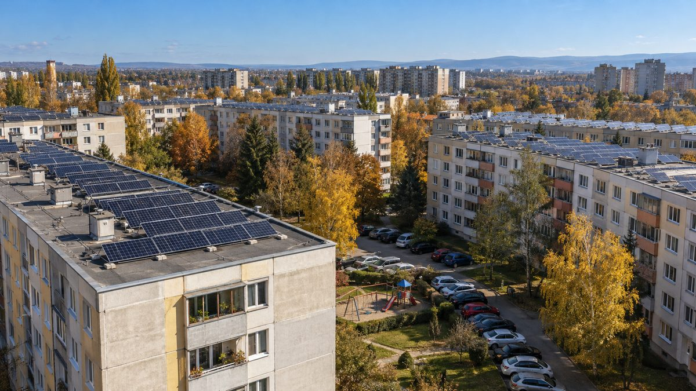

폴란드, 도시 주민도 에너지협동조합 만들 수 있게 법 고쳤지만…EU 국가보조 심사에 묶여 시행 멈춰

2025년 10월 개정법에 도시 조항 넣었으나 EU 집행위 긍정 결정 때까지 적용 정지…기후부 올해 안 결론 기대, 시민단체는 전기를 팔 수 없는 협동조합이라 경쟁 해치지 않는다고 주장
폴란드에서 도시 주민과 아파트 관리단, 지역 상인도 에너지협동조합을 만들 수 있게 한 법 조항이 통과됐지만, 유럽연합(EU) 집행위원회의 국가보조 심사에 묶여 시행되지 못하고 있다. 폴란드 에너지협동조합은 지금까지 농촌과 도농복합 기초자치단체에서만 세울 수 있었고, 조합원들이 한 발전원의 전기를 함께 나눠 정산하고 배전요금 일부를 면제받는 방식으로 에너지 비용을 낮춰 왔다. 기후환경부는 발전 지점과 사용 지점을 바로 잇기 어려운 도시 밀집 지역을 위해 생산 전기를 여러 계량기에 가상으로 나눠 정산하고 망 이용료 일부를 깎아 주는 모델을 만들어 2025년 10월 9일 개정법에 담았으나, 도시 지역 조항은 집행위의 긍정 결정이 나올 때까지 적용을 멈추도록 했다. 집행위는 올해 1월 신청을 받아 정식 절차에 앞선 비공식 협의인 '사전 통보' 단계에서 상계 정산과 배전요금 면제가 EU의 배전요금 원칙·국가보조 규정에 맞는지, 배전사업자 재정에 어떤 영향을 주는지 살피고 있으며, 기후부는 7월 말 추가 설명과 계산 자료를 보낸 뒤 올해 안에 결론을 받기를 기대한다고 밝혔지만 이 단계에는 결정 기한이 보장되지 않는다. 환경법 시민단체 프랑크 볼드 재단의 아그니에슈카 스투프키에비치 변호사는 "에너지협동조합은 전기를 팔 수 없다"며, 해마다 생산 전기의 70% 이상을 조합원이 직접 써야 하는 자기 비용 절감 모델이라 경쟁을 해치는 보조로 보기 어렵다고 주장했다. 그는 부정적 결정이 나오면 도시뿐 아니라 농촌 시민에너지에도 악영향이 갈 수 있다고 우려하며, 앞서 에너지 클러스터의 배전요금 감면도 집행위 의견이 나온 지 1년이 넘도록 법 개정이나 새 지원책으로 이어지지 않았다고 지적했다.
시민에너지 관점
폴란드에는 자가발전 소비자가 약 170만 명이나 있지만, 도시에서도 만들 수 있는 '시민 에너지 공동체'는 몇 해 동안 4곳에 그쳤다. 독일은 2023년 재생에너지법(EEG)을 고치면서 시민에너지회사가 짓는 소규모 풍력·태양광을 입찰에서 빼 주는 예외를 두었는데, EU 규정 안에서도 시민 소유 사업에 따로 길을 낼 수 있다는 것을 보여 준 예다. 주민에게 주는 혜택이 시장을 비튼다는 우려가 있지만, 전기를 팔지 못하고 생산량 대부분을 조합원이 직접 써야 하는 협동조합은 이윤을 쫓는 사업자가 아니라 주민의 요금을 낮추는 장치다. 우리도 아파트와 도심 주민이 함께 발전하고 함께 정산하는 협동조합 모델을 만들 때 망 요금과 보조 규정을 설계 단계부터 맞춰 두어, 법을 만들고도 시행이 멈추는 일을 막아야 한다.
출처: Portal Samorządowy 2026-10-27 Kalina Olejniczak 원문 보기
ポーランド、都市住民もエネルギー協同組合を作れるよう法改正…EUの国家補助審査で施行止まる
2025年10月の改正法に都市条項を盛り込むも、欧州委員会の肯定的決定まで適用停止…気候省は年内の結論に期待、市民団体は電力を売れない協同組合は競争を損なわないと主張
ポーランドで都市住民や集合住宅の管理組合、地域の商店も「エネルギー協同組合」を設立できるようにする法律の条項が成立したが、欧州連合（EU）欧州委員会の国家補助審査に阻まれ、施行に至っていない。ポーランドのエネルギー協同組合はこれまで農村部と都市・農村混合の基礎自治体でしか設立できず、組合員が一つの発電設備の電力を分け合って精算し、配電料金の一部免除を受けることでエネルギーコストを下げてきた。気候・環境省は、発電地点と消費地点を直接つなぎにくい都市の密集地向けに、発電した電力を複数のメーターへ仮想的に割り当てて精算し、系統利用料の一部を減額するモデルを作り、2025年10月9日の改正法に盛り込んだが、都市部の条項は欧州委員会の肯定的な決定が出るまで適用を停止するとした。欧州委員会は今年1月に申請を受け、正式手続き前の非公式協議である「事前通知」段階で、相殺精算と配電料金の免除がEUの配電料金原則・国家補助規則に合うか、配電事業者の財政にどう影響するかを検討しており、気候省は7月末に追加の説明と試算資料を送ったうえで年内の結論に期待を示したが、この段階では決定の期限は保証されていない。環境法分野の市民団体フランク・ボールド財団のアグニェシュカ・ストゥプキェヴィチ弁護士は「エネルギー協同組合は電力を売ることができない」と述べ、毎年発電量の70%以上を組合員が自ら使わなければならない自己コスト削減型のモデルであり、競争をゆがめる補助とはみなしにくいと主張した。同氏は否定的な決定が出れば都市だけでなく農村の市民エネルギーにも悪影響が及びかねないと懸念し、先にエネルギークラスターの配電料金減免も、欧州委員会の意見が出てから1年以上たっても法改正や新たな支援策につながっていないと指摘した。
市民エネルギーの視点
ポーランドには自家発電する消費者が約170万人もいるのに、都市でも設立できる「市民エネルギー共同体」は数年間で4カ所にとどまった。ドイツは2023年の再生可能エネルギー法（EEG）改正で、市民エネルギー会社が建てる小規模な風力・太陽光を入札の対象外とする例外を設けており、EUの規則の中でも市民所有の事業に別の道を開けることを示した例だ。住民への優遇が市場をゆがめるという懸念はあるが、電力を売れず、発電量の大半を組合員が直接使わなければならない協同組合は、利潤を追う事業者ではなく住民の料金を下げる仕組みだ。私たちも集合住宅や都心の住民が共に発電し共に精算する協同組合モデルをつくる際、系統料金と補助の規則を設計段階から整え、法をつくっても施行が止まる事態を防がなければならない。
出典: Portal Samorządowy 2026-10-27 Kalina Olejniczak 原文を読む
波兰修法允许城市居民组建能源合作社，却因欧盟国家援助审查而暂停实施
2025年10月修正法纳入城市条款，但须待欧盟委员会作出肯定决定才能适用…气候部期待年内有结论，民间团体主张不能售电的合作社不会损害竞争
波兰已通过法律条款，允许城市居民、公寓业主共同体和当地商户组建能源合作社，但因欧盟委员会的国家援助审查，这些条款至今未能实施。此前，波兰能源合作社只能在农村和城乡混合型基层地方政府辖区设立，社员共同分摊一个发电设施的电力并统一结算，同时享受部分配电费减免，以此降低能源成本。波兰气候与环境部针对发电点和用电点难以直接相连的城市密集区，设计了将所发电量虚拟分配到多个电表进行结算、并减免部分电网使用费的模式，写入2025年10月9日的修正法，但规定城市地区条款须待欧盟委员会作出肯定决定后才能适用。欧盟委员会今年1月受理申请，正在正式程序之前的非正式磋商即"预先通报"阶段，审查抵扣结算和配电费减免是否符合欧盟配电费原则和国家援助规则、对配电运营商财务有何影响；气候部7月底补交了说明和测算资料，表示期待年内得到结论，但这一阶段并无决定期限的保证。环境法民间团体Frank Bold基金会律师Agnieszka Stupkiewicz表示"能源合作社不能售电"，并主张合作社每年须由社员自用70%以上的发电量，是降低自身成本的模式，难以视为扭曲竞争的援助。她担心，一旦出现否定决定，不仅城市，农村的公民能源也可能受到冲击；她还指出，此前能源集群的配电费减免在欧盟委员会提出意见一年多后，仍未带来法律修改或新的支持措施。
市民能源视角
波兰的自发自用消费者多达约170万人，但城市也能设立的"公民能源共同体"几年来只有4个。德国在2023年修订《可再生能源法》（EEG）时，为公民能源公司建设的小型风电和光伏设置了免于招标的例外，表明在欧盟规则框架内也能为公民所有的项目另开通道。有人担心给居民的优惠会扭曲市场，但不能售电、大部分发电量须由社员自用的合作社，不是追逐利润的企业，而是降低居民电费的机制。我们在设计让公寓和城区居民共同发电、共同结算的合作社模式时，也应从一开始就把电网费用和补贴规则安排妥当，避免出现法律通过却无法实施的局面。
来源: 地方自治门户（Portal Samorządowy） 2026-10-27 Kalina Olejniczak 查看原文
Poland changed the law to let city residents form energy cooperatives, but an EU state aid review has put it on hold
Urban provisions in the October 2025 amending act stay suspended until a positive European Commission decision; climate ministry hopes for an answer this year, while a civic group argues cooperatives that cannot sell power do not distort competition
Poland has passed provisions allowing city residents, housing communities and local businesses to form energy cooperatives, but they cannot take effect while the European Commission reviews them under EU state aid rules. Until now Polish energy cooperatives could only be set up in rural and mixed urban-rural municipalities, where members share and settle power from a common generating source and are exempt from part of their distribution charges, cutting their energy costs. For dense urban areas, where generation and consumption points are hard to link directly, the Ministry of Climate and Environment designed a model that allocates generated power virtually across several meters and reduces some network fees; it was written into the amending act of 9 October 2025, but the urban provisions are suspended until the Commission issues a positive decision. The Commission received the application in January and is examining it in "pre-notification," an informal dialogue ahead of formal proceedings, looking at whether net-metering and the distribution fee exemptions fit EU tariff principles and state aid rules and how they would affect grid operators' finances; the ministry sent further explanations and calculations at the end of July and says it hopes for an answer this year, although this stage carries no guaranteed deadline. Agnieszka Stupkiewicz, a lawyer with the Frank Bold Foundation, said that "energy cooperatives cannot sell energy," arguing that a model in which members must use at least 70% of the output themselves every year is about cutting their own costs and is hard to see as aid that distorts competition. She warned that a negative decision could hurt citizen energy in rural areas as well as cities, noting that fee reductions for energy clusters have still not led to any change in the law or new support more than a year after the Commission gave its opinion on them.
Citizen Energy View
Poland has about 1.7 million prosumers, yet only four "citizen energy communities," which can also be set up in cities, have been formed over several years. When Germany amended its Renewable Energy Sources Act (EEG) in 2023, it exempted small wind and solar projects built by citizen energy companies from auctions, showing that EU rules leave room for a separate path for citizen-owned projects. Some worry that benefits for residents distort the market, but a cooperative that cannot sell power and must consume most of its output itself is not a profit-seeking business; it is a tool for lowering residents' bills. When we design cooperative models that let apartment and city residents generate and settle power together, grid fees and subsidy rules should be lined up from the start, so that a law is not passed only to be left on hold.
Source: Portal Samorządowy 2026-10-27 Kalina Olejniczak Read the original